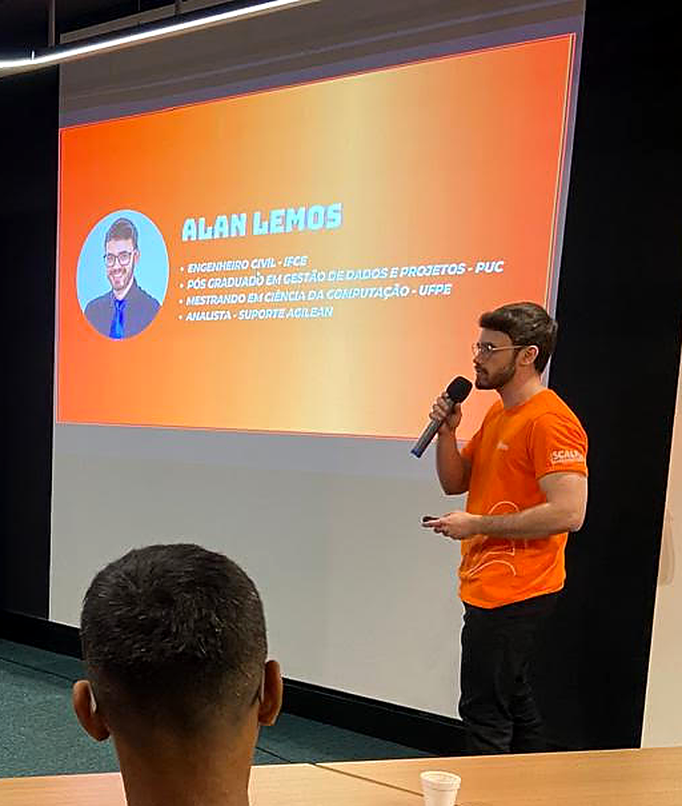

Atuo de forma multidisciplinar entre projetos, produtos, dados e obras. Escolha abaixo a função mais próxima do que você precisa e baixe o currículo correspondente.

Sou mestre em Ciência da Computação pelo CIn-UFPE, com foco em gestão de projetos. Gerencio projetos unindo abordagens preditivas e ágeis: domínio de MS Project e Jira, mapeamento de processos em BPMN, construção de indicadores e dashboards, e gestão de portfólio, equipes e stakeholders. Essa base vem da minha origem em planejamento de obras, hoje aplicada também a projetos de tecnologia e produto.
↓ Baixar currículo detalhado (PDF)Sou mestre em Ciência da Computação pelo CIn-UFPE. Atuei na definição de requisitos e priorização de funcionalidades de um assistente de atendimento por IA em uma empresa de software, unindo visão de negócio com execução técnica. Trabalho com metodologias ágeis (Scrum e Kanban), uso Jira no dia a dia e tenho vivência em discovery com usuários reais para embasar decisões de produto.
↓ Baixar currículo detalhado (PDF)Sou pós-graduado em Gestão e Análise de Dados pela PUC-MG. Construo indicadores e dashboards que orientam decisões de produto e de operação, com experiência em Excel avançado, lógica de programação e automação de processos com IA. Atuei também na gestão de dados de planejamento e qualidade em projetos de obra, o que me dá uma leitura de dados que atravessa os dois mundos.
↓ Baixar currículo detalhado (PDF)Sou engenheiro civil, com formação em Master Black Belt em Lean Construction e experiência prática em cronograma, orçamento e fiscalização de obras usando MS Project. Hoje levo esse mesmo rigor de planejamento para projetos de tecnologia e produto.
↓ Baixar currículo detalhado (PDF)